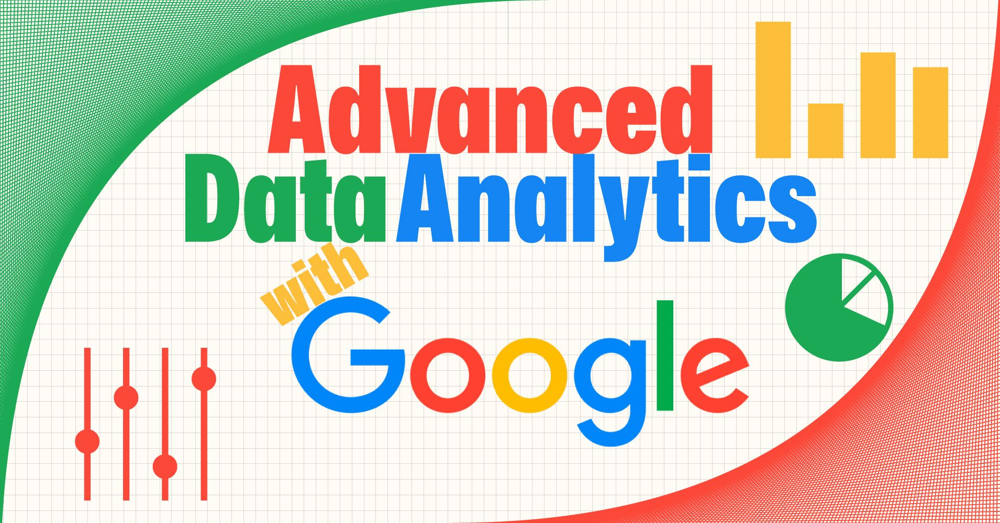
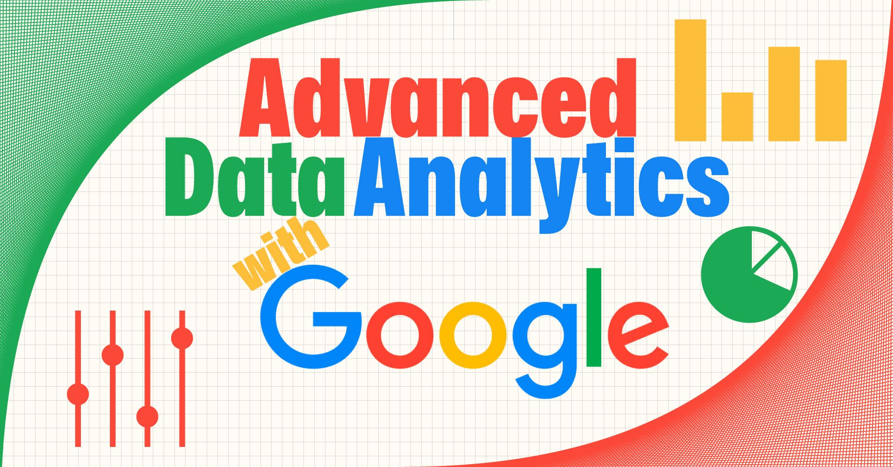

Scraped the data from popular job posting sites in Canada and the USA. Analyzed it and visualized the key findings and came up with recommendations for fellow data analysts. There were used Spreadsheets, Python, SQL and Tableau for the analysis

I explored data of hotel bookings made in the period of more than a year. The insightful findings were revealed. I transformed them into actionable advices and recommendations for the hotel management. Also, I developed a prediction model which classifies the booking as potentially canceled or fulfilled

Worked with dataset, containing multiple attributes about 25000 patients and came up with actionable advices how to decrease readmission rates and what patients pay special attention to.

Analyzed the data and presented the table, which shows top-performing industries, regarding number of unicorns emerged during 2019, 2020 and 2021 years, and their relevant attributes

Visualized various data about football in the past 20 years. Created story consisted of 4 interactive dashboards, so the user can find out the answers to the questions easily and in compelling manner

In this project I have analyzed over 130000 air flights, cleaned the dataset, filtered out valid prices. Using correct prices, I have built the model which accurately predicts the price of air flight tickets

I investigated the data of Divvy Bikes' trips for the April of 2023, built the comrehensible report and dashboard for executives. I came up with the concrete pieces of advice on the topic how to increase the fraction of subscribers among the customers.
 

Through advanced data analysis, we've unveiled the mysteries of interstellar travel patterns, revealing which passengers are more likely to be transported on their cosmic journeys. This insightful discovery paves the way for a more personalized space travel experience, ensuring every passenger's journey is out of this world!